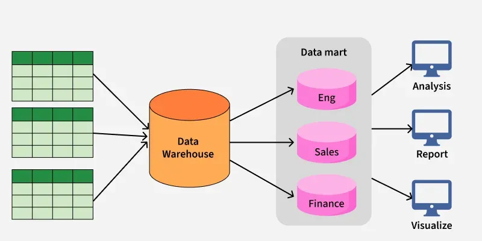

/
On this page
Data Marts
A data mart is a structure/access pattern specific to data warehouse environments. The data mart is a subset of the data warehouse that focuses on a specific business line, department, subject area, or team. Whereas data warehouses have an enterprise-wide depth, the information in data marts pertains to a single department. In some deployments, each department or business unit is considered the owner of its data mart, including all the hardware, software, and data. This enables each department to isolate the use, manipulation, and development of their data. In other deployments where conformed dimensions are used, this business unit ownership will not hold true for shared dimensions like customer, product, etc.

Warehouses and data marts are built because the information in the database is not organized in a way that makes it readily accessible. This organization requires queries that are too complicated, difficult to access or resource intensive.
While transactional databases are designed to be updated, data warehouses or marts are read only. Data warehouses are designed to access large groups of related records. Data marts improve end-user response time by allowing users to have access to the specific type of data they need to view most often, by providing the data in a way that supports the collective view of a group of users.
A data mart is basically a condensed and more focused version of a data warehouse that reflects the regulations and process specifications of each business unit within an organization. Each data mart is dedicated to a specific business function or region. This subset of data may span across many or all of an enterprise’s functional subject areas. It is common for multiple data marts to be used in order to serve the needs of each individual business unit (different data marts can be used to obtain specific information for various enterprise departments, such as accounting, marketing, sales, etc.).
Types
Today, there are three basic types of data marts:
Independent data marts are not part of a data warehouse, and are very similar to the original data mart offered by ACNielsen. They are typically focused on one area of business or subject area. Data sources can include both external and internal sources. It is then translated, processed, and loaded into the data mart, where it is stored until needed.
Dependent data marts are built into an existing data warehouse. A top-down approach is used, supporting the storage of all data in a centralized location. A clearly defined section of data is then selected for purposes of research.
Hybrid data marts combine the data taken from a data warehouse and “other” data sources. This can be useful in a variety of situations, including providing the ad hoc integration with a new group, or product, which has been added to an organization. Hybrid data marts are well-suited for multiple database environments and provide fast implementation turnaround. These systems make data cleansing easy, and work well with smaller data-centric applications.
Benefits
Single source of truth — the data mart can serve as a single source of truth for a particular line of business, so everyone is working off of the same facts and data.
Simplicity — business users looking for data can visit the curated data mart for easy access to the data they care about, instead of having to wade through the entire data warehouse and join tables together to get the data they need.
Challenges
Enterprise data warehouses are created with good intentions to serve all of an enterprise’s data management needs. But invariably, you can’t keep everyone happy, as different business units have different data needs and objectives. So departments copy and create their own data marts (sometimes with Enterprise IT help) with the aim of augmenting a particular data warehouse’s subject area, to meet their self-service analytics and departmental reporting needs. As a result, over time, data marts can become data silos and shadow copies of data — from an enterprise perspective — but they do serve the department’s needs well. When many departments do this – there is no single version of truth.
How Lakehouse Solves These Challenges
Lakehouse solves the challenges mentioned above by putting all of the enterprise data warehouses and data marts on one platform, with unified security and governance — while still offering different teams the flexibility to have their own sandboxes. Since any data mart or “augmented copy” is made on the same Lakehouse platform as all the others — the Lakehouse’s data catalog discovers that, and given the Data Governance rules like tagging and using a data dictionary etc., it ensures that the augmented copy is made discoverable by all — preventing similar duplicate copies.